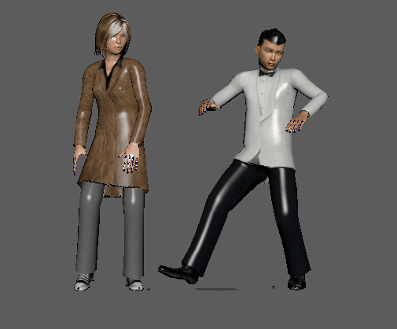
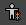
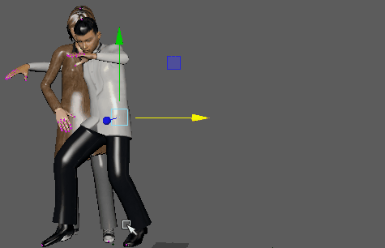

有时，无论是为了适应场景中的其他对象还是与姿势更好地拟合，您都需要在场景中重新定位角色动画。“重新定位”(Relocate)可用于在 XYZ 空间中移动动画角色。

- 在时间编辑器中选择动画片段。
- 从时间编辑器菜单栏中选择。或者，在时间编辑器工具栏中单击“重新定位”(Relocate)按钮 。将在角色的基础关节附近创建一个重定位器。“重新定位”(Relocate)图标 将显示在轨迹上。
注： 如果动画片段由多个根驱动，请改为选择“重新定位 > 创建重定位器”(Relocate > Create Relocator) >
 以打开Relocator Options(重定位器选项)。在其中，您可以从列表中（包括场景中的所有根对象）创建一个重定位器。
以打开Relocator Options(重定位器选项)。在其中，您可以从列表中（包括场景中的所有根对象）创建一个重定位器。
除非选中（这是下一步），否则“重新定位”(Relocate)不可见。
- 在动画片段仍处于选定状态时，从时间编辑器菜单栏中选择。
- 使用平移和旋转工具，或者在通道盒中修改 X 或 Y 值，将角色移动到不同的位置。

注： 如果多个根驱动动画片段（例如，如果装备没有明确层次，但具有用于整个角色的控制器），则可以选择片段，然后随时单击“编辑重定位器”(Edit Relocator)以在重定位器选项中将其他根设为重定位器。
使用重定位器可简化匹配姿势过程，因为您可对齐姿势元素以便更好地匹配。请参见使用时间编辑器重定位器匹配姿势。